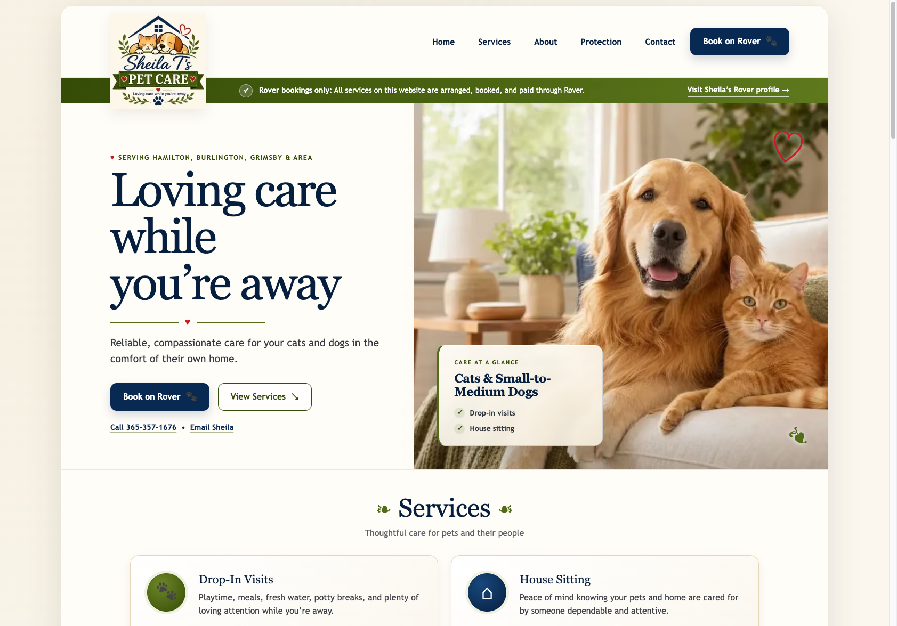

Brand identity
A playful illustrated pet care logo, deep navy typography, natural greens, and warm neutrals create a distinctive but professional feel.
Independent website design · Real small business
A welcoming digital home for Sheila T's Pet Care Service, built around clear information, a recognizable visual identity, and a reassuring experience for pet owners.

The project
This is a real business website, not a fictional concept. The design helps visitors understand the available care, recognize the brand, and find the path to book through Rover.
A playful illustrated pet care logo, deep navy typography, natural greens, and warm neutrals create a distinctive but professional feel.
Clear navigation and prominent booking calls to action help clients find services, business information, and the Rover booking route.
The content is organized to remain readable and approachable across desktop and smaller screens.
Visual direction
A retrospective presentation of the colours, typography, imagery, and personality visible in the finished design.
Brand personality
Friendly pet imagery and subtle natural details make the experience feel warm without losing its professional purpose.
Colour palette
Deep navy · Leaf green · Warm cream · Soft gold
Typography
Expressive serif headlines paired with straightforward, legible supporting text.
Photography
Details
Pet-inspired accents, rounded cards, gentle contrasts, and obvious actions keep the site approachable.
Page structure
A simplified, retrospective wireframe showing the hierarchy of the finished homepage. This is an illustrative reconstruction, not an original planning artifact.
SERVICES
Design-process illustration based on the published homepage layout.
The finished result
See the published experience, including its real navigation, service descriptions, and booking information. The external website opens in a new tab so you can return to this case study.